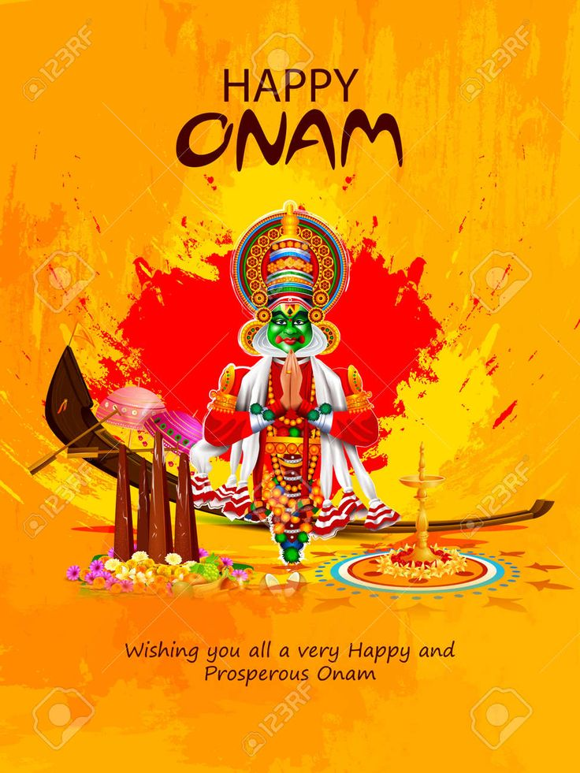
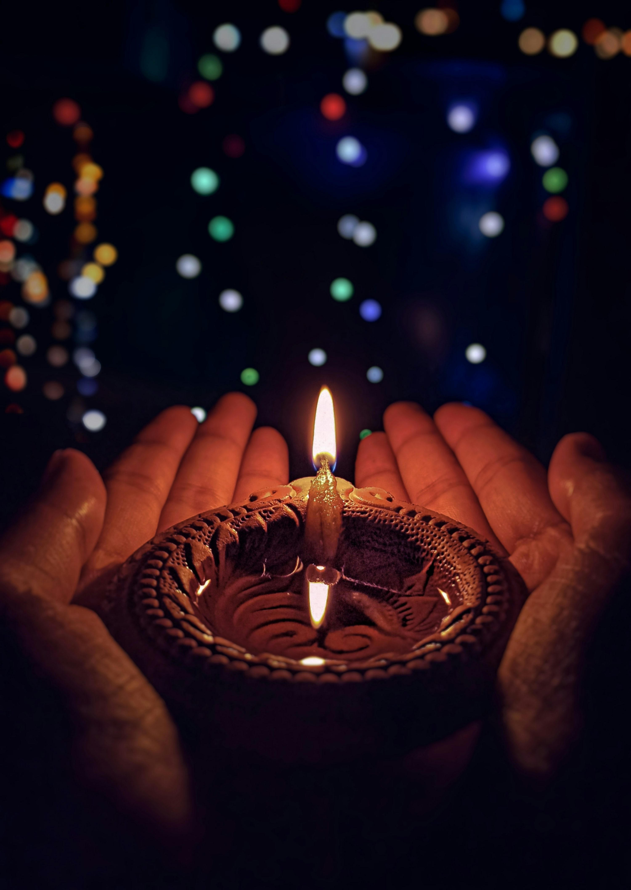

INDIAN FESTIVALS
ONAM

Onam commemorates the return of the generous daitya king Mahabali after he was banished to the netherworld by Vamana (the fifth avatar of Hindu deity Vishnu).[11][12][13][14] According to the Hindu legends, after Indra (the king of the devas) is defeated by Mahabali (the king of the asuras), the devas ultimately seek refuge in Vishnu, who agrees to restore Indra to power. To do so, Vishnu incarnates as a dwarf priest called Vamana. The king Mahabali (himself a devotee of Vishnu) conducts ritual prayers, one of which is attended by Vamana, who requests only three feet (steps) of land to build a fire-altar. Mahabali agrees, despite being told about Vamana's divine nature by the sage Shukra. Vamana grows in size, and in three strides, encompasses all of the universe and beyond. The three worlds are restored to Indra, and Mahabali and the asuras are banished to the netherworld (Patala).[15][16] However, witnessing Mahabali's love for his subjects, Vamana grants the king's sole wish to visit his kingdom once every year. This homecoming of Mahabali is celebrated as Onam in Kerala every year.
DIWALI

Diwali (English: /dɪˈwɑːliː/; Deepavali,[4] IAST: Dīpāvalī) is the Hindu festival of lights, with variations celebrated in other Indian religions.[a] It symbolises the spiritual "victory of light over darkness, good over evil, and knowledge over ignorance".[5][6][7][8] Diwali is celebrated during the Hindu lunisolar months of Ashvin (according to the amanta tradition) and Kartika—between around mid-September and mid-November.[9][10][11][12] The celebrations generally last five or six days.[13][14] Diwali is connected to various religious events, deities and personalities, such as being the day Rama returned to his kingdom in Ayodhya with his wife Sita and his brother Lakshmana after defeating the demon king Ravana.[15] It is also widely associated with Lakshmi, the goddess of prosperity, and Ganesha, the god of wisdom and the remover of obstacles.[16] Other regional traditions connect the holiday to Vishnu, Krishna, Durga, Shiva, Kali, Hanuman, Kubera, Yama, Yami, Dhanvantari, or Vishvakarman. Primarily a Hindu festival, variations of Diwali are also celebrated by adherents of other faiths.[13] The Jains observe their own Diwali which marks the final liberation of Mahavira.[17][18] The Sikhs celebrate Bandi Chhor Divas to mark the release of Guru Hargobind from a Mughal prison.[19] Newar Buddhists, unlike other Buddhists, celebrate Diwali by worshipping Lakshmi, while the Hindus of Eastern India and Bangladesh generally celebrate Diwali by worshipping the goddess Kali.
Eid al-Fitr

Eid al-Fitr (/ˌiːd əl ˈfɪtər, -trə/ EED əl FIT-ər, -rə; Arabic: عيد الفطر, romanized: ʿĪd al-Fiṭr, lit. 'Feast of Breaking the Fast', IPA: [ʕiːd al ˈfɪtˤr]) is the earlier of the two official holidays celebrated within Islam (the other being Eid al-Adha). Eid al-Fitr is celebrated by Muslims worldwide because it marks the end of the month-long dawn-to-dusk fasting of Ramadan.[4] Eid al-Fitr falls on the first day of Shawwal in the Islamic calendar; this does not always fall on the same Gregorian day, as the start of any lunar Hijri month varies based on when the new moon is sighted by local religious authorities. The holiday is known under various other names in different languages and countries around the world. The day is also called Eid I or "Lesser Eid" (Arabic: العيد الصغير, romanized: al-ʿĪd al-Ṣaghīr), or simply Eid.[5][6] Eid al-Fitr has a particular salah that consists of two rakats generally performed in an open field or large hall. It may only be performed in congregation (jamāʿat) and features seven additional Takbirs (raising of the hands to the ears whilst reciting the Takbir, saying "Allāhu ʾAkbar", meaning "God is the greatest"). In the Hanafi school of Sunni Islam, there are three Takbirs at the start of the first rakat and three just before rukūʿ in the second rakat.[7] Other Sunni schools usually have 12 Takbirs, similarly split in groups of seven and five. In Shia Islam, the salat has six Takbirs in the first rakat at the end of Tilawa, before rukūʿ, and five in the second.[8] Depending on the juristic opinion of the locality, this salat is either farḍ (فرض, obligatory) or mustaḥabb (strongly recommended). After the salat, Muslims celebrate the Eid al-Fitr in various ways with food being a central theme,[9] which also gives the holiday the nickname "Sweet Eid" or "Sugar Feast".